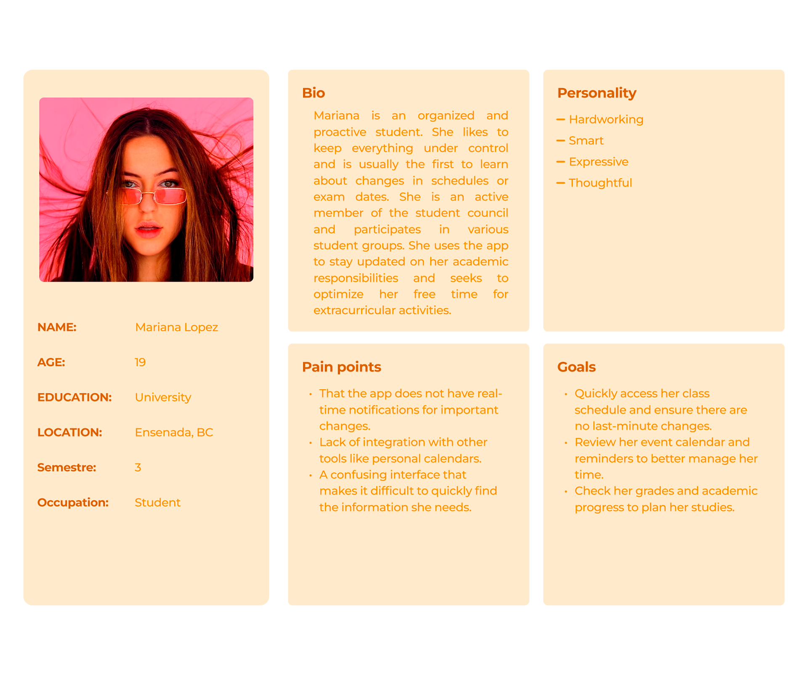

Ceux App
Ceux


Product Overview
One App, Every Academic Need
An intuitive and efficient mobile application that allows Universidad Xochicalco students to manage all aspects of their university life in one centralized platform. This includes accessing class schedules and staying updated with university news and events.


Problem Statement
Students at Universidad Xochicalco faced significant challenges in managing essential aspects of university life due to fragmented and outdated systems. Students struggled with accessing class schedules, grades, and important announcements through different platforms, leading to confusion and inefficiency.
Goals
The "Ceux App" application was developed to centralize and streamline the management of university-related tasks for students, faculty, and administrative staff. By offering a user-friendly mobile platform, the application allows students to easily access their class schedules, view grades, and receive real-time notifications about important announcements.
Solution
To address the confusion caused by fragmented and outdated systems at Universidad Xochicalco, we designed Ceux App, a centralized and intuitive mobile platform that brings together class schedules, grades, announcements, and key academic tools in one place.
By streamlining navigation, modernizing the interface, and ensuring real-time updates, the app eliminates the need to jump between multiple platforms—helping students stay organized, informed, and in control of their university life.

Design Process
Design Thinking Methodology
I followed the Design Thinking framework to ensure a user-centered approach throughout the development of Ceux App. This methodology helped me understand user needs, define key problems, generate solutions, and validate them through continuous testing. Although the project followed a 6-month roadmap, the process was iterative — I revisited each phase multiple times to refine and improve the final outcome.
The timeline was structured into the following phases: Research, Ideation, Information Architecture, Wireframing, UI Design, and Prototyping/Testing.I followed the Design Thinking framework to ensure a user-centered approach throughout the development of Ceux App. This methodology helped me understand user needs, define key problems, generate solutions, and validate them through continuous testing. Although the project followed a 6-month roadmap, the process was iterative — I revisited each phase multiple times to refine and improve the final outcome. The timeline was structured into the following phases: Research, Ideation, Information Architecture, Wireframing, UI Design, and Prototyping/Testing.
01 Empathize
I conducted interviews with students to understand their daily challenges, frustrations, and unmet needs in managing their university life.
02 Define
I analyzed the collected insights to identify the main problem: fragmented systems causing confusion and inefficiency for students.
03 Ideate
I generated multiple solutions through brainstorming and ideation sessions, prioritizing the centralization of all university functions in a single app.
04 Prototype
I developed low and high-fidelity prototypes to visualize the solution, allowing for rapid iterations before final development.
05 Test
I validated the prototypes with real users through usability testing, gathering feedback to refine the experience before launch.
Research Phase
Understanding the Student path
Competitive Analysis
University-related apps and portals often provide fragmented access to academic tools, forcing students to jump between multiple systems to complete essential tasks.
To better understand how competing platforms support (or fail to support) student workflows, I conducted a competitive analysis focused on core features, usability patterns, and areas where current solutions fall short.
This review highlighted common strengths—such as centralized dashboards and academic integrations—but also exposed significant gaps in navigation clarity, personalization, and interface modernization. These insights revealed clear opportunities for Ceux App to deliver a more cohesive, intuitive, and student-centered experience.

User Interviews
Key Findings
Through comprehensive user research —including interviews with 100 participants (60 university students and 40 high school students)— I gathered quantitative data that revealed clear patterns and priorities. These insights directly informed the redesign strategy, focusing on clarity, simplification, and improved system reliability.
1. Calendar as the Core Feature
82% of students identified the calendar as the most valuable feature. This metric emerged from asking students to rank app features by usefulness; the calendar consistently appeared in the top position, confirming that schedule visibility is a primary need.
2. Information Accessibility
68% reported that finding information was generally straightforward, though several students noted inconsistencies depending on the section. This was measured through task-based questions where students rated difficulty accessing schedules, grades, and announcements.
3. UI Friction & Unnecessary Elements
43% pointed out that unnecessary or broken external links negatively affected their experience. This insight came from a question specifically addressing "elements that interrupt or confuse navigation," with external links being the most frequent response.
4. Synchronization Issues as a Major Pain Point
41% stated that sync-related issues (loading delays, outdated schedules, or missing notifications) were their biggest challenge in daily usage. Students were asked to select the single most disruptive issue in the app, revealing synchronization as the dominant frustration.
5. Overall Positive Experience
Despite existing problems, 62% described their overall experience as positive. This was measured with a standard satisfaction scale (1–5), with 62% selecting 4 or 5.
6. Improved Personal Organization
74% said that using the app helped them stay more organized, particularly due to schedule visibility and reminders. This metric was derived from a yes/no question plus written explanations that reinforced the calendar's central importance.
These quantitative findings directly shaped the redesign strategy, prioritizing clarity, simplification, and improved system reliability. The data revealed that while students value the app's core functionality, there are clear opportunities to enhance the user experience by addressing synchronization issues, removing unnecessary elements, and strengthening the calendar feature that students rely on most.

-
Pain Point 1
That the app does not have real-time notifications for important changes.
-
Pain Point 2
The lack of integration with other tools like personal calendars.
-
Pain Point 3
A confusing interface that makes it difficult to quickly find the information they need.
Empathy Map
Understanding the Student Experience
To deeply understand our users, I created an empathy map that captures what students say, think, do, and feel when interacting with the app. This visualization helped identify pain points, motivations, and opportunities for improvement.

User Personas
Understanding Our Users
TTo build a solution truly aligned with student needs, I developed two key personas—one representing high school students (primary persona) and another representing university students (secondary persona).
These personas were informed by early research, surveys, and on-campus observations, allowing me to understand not only what students do inside the app, but why they behave that way.
Primary Persona
Secondary Persona

Journey Map
Understanding the Student path
To deeply understand our users, I created an empathy map that captures what students say, think, do, and feel when interacting with the app. This visualization helped identify pain points, motivations, and opportunities for improvement.

Ideation Phase
Understanding Student Needs Inside Ceux App
Rapid-brainstorming
Eight rapid sketches led to one standout concept for improving the CEUX process.
The student journey map revealed key friction points across the academic process. With these insights, I moved into rapid ideation.
The Crazy 8 sprint introduced tight time and creativity constraints, leading to one standout concept: A smart academic assistant powered by AI to streamline student tasks, guidance, and campus workflows.

MoSCow
Defining a focused MVP with the MoSCoW method
With a tight timeline for the MVP, narrowing the scope was essential to ensure meaningful impact. Using the MoSCoW matrix, I identified the features that would most effectively improve the student experience within CEUX App.
The analysis revealed that prioritizing the student submission overview and the review flow interface would create the highest value—streamlining a previously fragmented process and setting the foundation for a more reliable, intuitive system.
Must
- Streamlined submission flow to reduce confusion and redundant actions.
- Redesigned design-review page with clearer steps and expectations.
Should
- Automated reminders/notifications for upcoming steps or missing requirements.
- Standardized layout that ensures consistency across different screens.
Could
- Optional tips or micro-guides for first-time users.
- Smart suggestions to help students fix common mistakes before submitting.
Won't
- Cross-department integration beyond the immediate review team.
- Advanced personalization features for unique student profiles.
Task flows
Mapping the student journey and defining the foundation for usability testing
After identifying key pain points in the student experience through the customer journey map and refining the MVP scope with the MoSCoW matrix, I moved into outlining the core user interactions through task flows.
These task flows were designed and prioritized based on their ability to support the primary persona’s goals—simplifying daily student needs, centralizing essential campus services, and reducing friction in tasks like checking schedules, accessing grades, managing events, and finding campus resources.
The example shown illustrates one of these essential task flows: how a student navigates the app to view their grades. This flow helped define the required screens, interactions, and logic for a seamless and intuitive experience—serving as a blueprint for the next design phase and reinforcing the overall vision of Ceux App: a unified, intuitive, student-first platform.

Design Phase
From Ideas to Usable Flows
Low to mid fidelity wireframes
Bringing clarity and usability to the student experience
Moving from low- to mid-fidelity wireframes allowed me to shape the core structure of Ceux App and validate how each flow supported students during their academic journey. This stage helped refine layouts, test navigation patterns, and ensure the experience stayed simple, intuitive, and aligned with real student needs.
Persona Needs
-
Centralized Management is a Must-Have
Students strongly value having all aspects of university life—schedules, grades, announcements, and tasks—consolidated into one platform. Centralization directly reduces confusion and improves daily efficiency.
-
Academic Tools Drive Adoption
The strongest pull for users is seamless integration with academic systems. Features like access to course materials, grades, and assignments remain the primary reason students choose or stay with a university app. Academic functionality must stay at the core of the product.
-
Personalization Boosts Engagement
Users respond positively to features that adapt to their preferences and needs. Customizable experiences increase satisfaction, retention, and overall engagement, signaling a growing expectation for more tailored interactions in EdTech products.
Opportunities
-
Simplify Navigation
There is a clear opportunity to simplify navigation, making the system easier and more intuitive—especially for new or first-time users.
-
Modernize UI with User-Friendly Visual Language
A modernized UI with a more user-friendly visual language could elevate the experience and make the platform more appealing compared to competitors.
-
Reduce Complexity and Enhance Interaction Patterns
By reducing overall complexity and enhancing interaction patterns, the app can become more accessible, fostering better usability and improving the perception of the product's design maturity.

Branding
Neutral palette for clarity with purposeful color accents
High-fidelity wireframes
Elevating the experience with refined visuals and student-centered interactions
Building on the mid-fidelity explorations and the insights gathered during early usability reviews, the high-fidelity wireframes for Ceux App focused on strengthening clarity, accessibility, and visual cohesion across the entire platform.

Testing & Iteration Phase
To validate the effectiveness of the redesigned student experience, I conducted unmoderated usability testing with 20 participants through the school.
92%
- Task completion rate:
1 min 47 sec
- Average time to complete the task:
8.6
- Average rating on a scale of 1 to 10:
7.9
- Likelihood of trusting the platform for academic tasks (1–10):
How do you feel about the experience of completing tasks within Ceux App?
The app is incredibly intuitive. I liked that I didn’t have to guess where anything was — everything was clear. I think the loading speed of some modules could still improve, but overall it feels organized, modern, and very easy to use for students who are always on the go.
Key adjustments
1. Enhancing clarity and reducing friction when interacting with flagged item
Usability testing revealed that students struggled to identify interactive elements related to flagged items—particularly the “add a comment” action—and often required unnecessary steps to complete simple reviews.
To address this, I redesigned the interaction pattern by introducing a clearly visible, inline comment field directly attached to each flagged item. This adjustment significantly reduced cognitive load, minimized extra clicks, and provided a more intuitive workflow for students reviewing notifications, updates, or pending tasks within the app.

To address this, I redesigned the interaction pattern by introducing a clearly visible, inline comment field directly attached to each flagged item. This adjustment significantly reduced cognitive load, minimized extra clicks, and provided a more intuitive workflow for students reviewing notifications, updates, or pending tasks within the app.
2. Enhancing clarity and reducing friction when interacting with flagged item
Usability testing revealed that students struggled to identify interactive elements related to flagged items—particularly the “add a comment” action—and often required unnecessary steps to complete simple reviews.
To address this, I redesigned the interaction pattern by introducing a clearly visible, inline comment field directly attached to each flagged item. This adjustment significantly reduced cognitive load, minimized extra clicks, and provided a more intuitive workflow for students reviewing notifications, updates, or pending tasks within the app.
To address this, I redesigned the interaction pattern by introducing a clearly visible, inline comment field directly attached to each flagged item. This adjustment significantly reduced cognitive load, minimized extra clicks, and provided a more intuitive workflow for students reviewing notifications, updates, or pending tasks within the app.